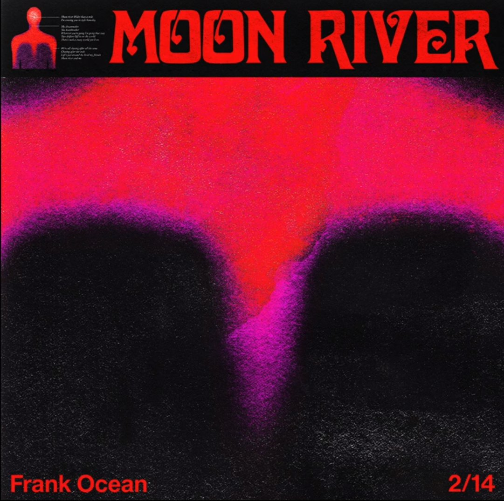
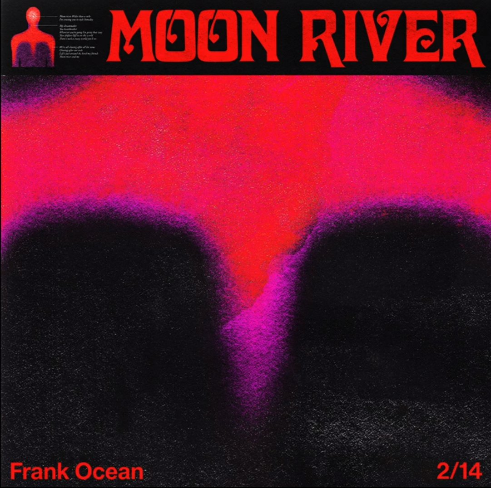
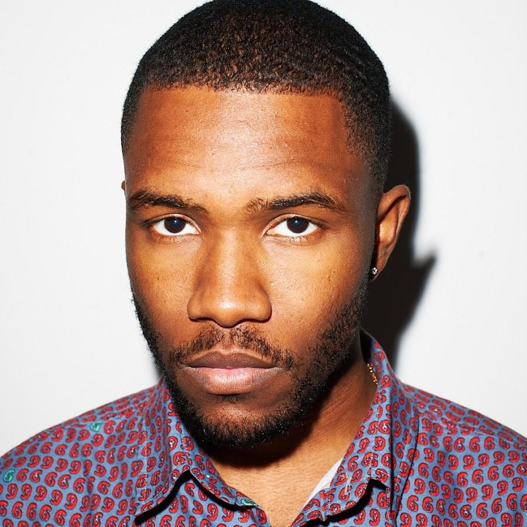
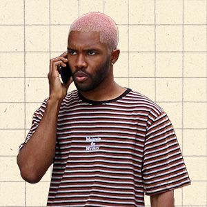

Frank Ocean
 
Frank Ocean (born October 28 1987) is an American singer, sonwriter, rapper, producer and photographer. Known for his idiosyncratic music style, Ocean started on a career as a ghostwriter, and in 2010 he became a member of hip hop collective Odd Future. He released his breakout mixtape, 'Nostalgia, Ultra' to critical acclaim in 2011. His debut studio album, 'channel ORANGE', was released in 2012 and reached number two on the Billboard 200.